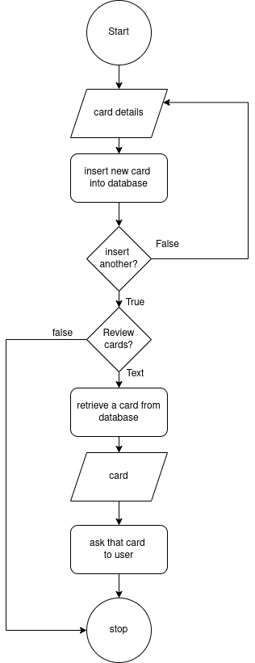

Created: 2023-04-24 Mon 19:58
1. Introduction
CardsQL is a simple flashcard revision app. Flashcards are a memorization/revision technique where you write a question on one side of a card/ piece of paper & the answer on the other side. You then read the question & try your best to remember the answer, before flipping the card over & see how well you did.
Cognitive researchers have found that trying to recall such facts strengthens the relevant neural connections in our brain & thus, allows us to remember it for longer periods of time. This process is specifically called Active Recall[1]. Another technique used in tandem with Active Recall is Spaced Repitition[2]. It dictates that your ability to remember a fact deteriorates over time. By performing Active Recall at specific intervals, we can re-strengthen our memory retention.
 Thus, instead of studying entire topics repeatedly, we can just revise small key points & be more effective.
Thus, instead of studying entire topics repeatedly, we can just revise small key points & be more effective.
2. Problem Statement
- inefficient traditional studying techniques
- inconvenient to manage physical flashcards
- Physical cards will eventually get damaged or wear out. It may also be impractical to store or carry around a large number of cards.
- Storing cards digitally allows them to be physically secure & portable.
- cumbersome to schedule, keep track of next repition for cards
- After reviewing/ recalling a card, we need to schedule its next Spaced Repitition. We not only need to keep track of its schedule, but also remember to review it on that day. If we forget, then keeping track of overdue cards adds another layer of unneeded complexity.
- CardsQL automates all these processes. After reviewing a card, we can rate how well we remembered the answer. This rating is used to determine the next review date for that card. This date is set such that by the next review, we haven't completely forgotten the answer, nor is it too easy.
- When revising on a particular day, CardsQL will show you cards that are scheduled for that day or older. Thus, overdue cards are handled easily.
3. Objectives
- provide as easy of an entry point to flashcard programs by keeping things simple
- provide intuitive interface so that user doesn't have to understand how the system works in order to utilize it
- allow creating different types of flashcards & categorizing them by subject/ tag
- automate scheduling of next review
4. Methodology
4.1. Requirement Identification
This project makes use of the Waterfall development approach in order to set concrete requirements & build towards achieving them.
4.1.1. Study of existing system
Two popular flashcard apps are:
- Quizlet
- Anki
- Pros
- Free & Open Source (FOSS)
- supports sync between multiple devices
- highly customizable with user-defined card types & community-made plugins
- Cons
- complex from start
- CardsQL should act as gateway/ intro to flashcards. can use Anki later
- might have to spend a lot of time customizing the program, adding plugins, to get a great experience
- Pros
4.1.2. Requirement Collection
- Functional requirements
Note: As CardsQL is meant for personal use, it only has one type of user instead of admin, multiple users etc.
- Non-Functional requirements
- offline access to all features achieved by hosting sql server & storing data on user's computer
- simple to use; 1st thing user sees is just card creation interface
- not have too many due cards (set maximum limit)
- regular data backups
- Use Case diagram

Figure 1: Use case diagram for CardsQL
\FloatBarrier
4.2. Feasibility Study
4.2.1. Technical
CardsQL is not too difficult to implement from a technical standpoint because it uses:
- plain HTML, CSS for the front-end
- basic JS, PHP for the busienss logic
- SQLite, a lightweight RDBMS, for the database. It uses a database file on the user's computer so it negates the need for maintaining a server for users to connect to.
4.2.2. Operational
- Because of the serverless architecture, the app will work at all times after downloading it. Thus, there is no need to designate manpower to ensure the app stays operational after launch.
- Users are sure to adopt the app as it is designed to be more convenient than paper flashcards. Anyone should be able to learn to use it, compared to other more advanced flashcard programs discussed in Study of existing system
4.2.3. Economic
CardsQl is viable from an economic standpoint as:
- The project was willingly built by the devloper for free.
- There are no additional costs for web hosting, server maintenance etc.
- There were no development costs as the app was builton the developer's existing hardware & using freely-licensed tools.
- The app is distributed freely to help users so there is no potential profit or loss.
4.3. High level design of System
As the following are high level representations of the system, they aim to provide a basic understanding of the system and thus, leave out intricate implementation details.
4.3.1. System Flow Chart
 \FloatBarrier
4.3.2. Methodology/ Working Mechanism
As stated previously, CardsQL does not have different types of users so all the following actions can be done by the user.
 \FloatBarrier
\FloatBarrier
 \FloatBarrier
\FloatBarrier
5. Gantt Chart
 \FloatBarrier
\FloatBarrier
6. Expected Outcome
- Provide a simple introduction to using flashcards, active recall & spaced repititon for learning
- Eliminate the need to constantly read or make notes on the same topics
- Help make studying a daily habit